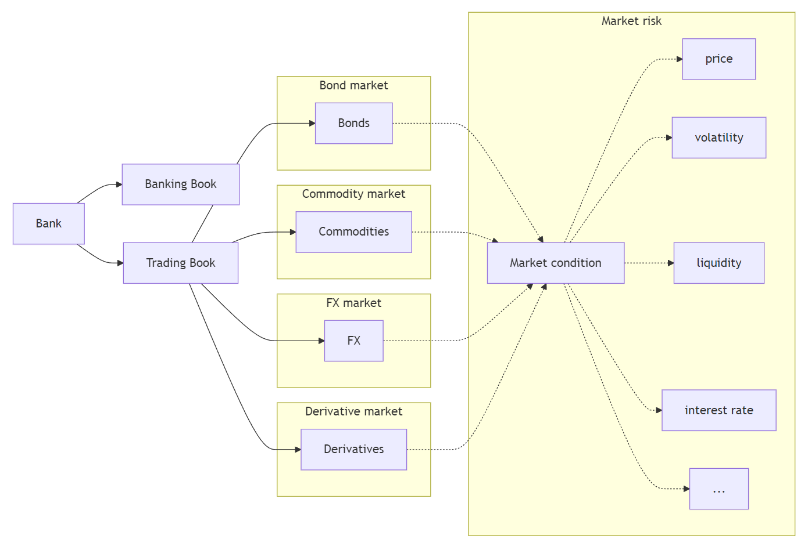

AFIN8003 Week 5 - Market Risk
Banking and Financial Intermediation
Guest lecturer
David Chan
David Chan has over 25 years’ experience in financial markets and is currently at ASX as Senior Manager Clearing Risk Data Analytics & Framework. In this role, David is responsible for the development of data & risk analytics platform, clearing risk management monitoring & review framework.
Prior to joining ASX, David was Executive Manager Strategic Risk Oversight at Commonwealth Bank of Australia, with responsibility for oversight trading book for Global Markets. In this role, David covered a range of asset classes including FX, rates, equities, and commodities with a special focus on XVA portfolio and capital optimization.
Prior to working at Commonwealth Bank, David held a number of senior risk management, finance and operations roles at Agricultural Bank of China International, Mirae Asset and JP Morgan in Hong Kong and Sydney.
David’s expertise across sell side and buy side trading, treasury management, asset management, financing and prime brokerage. With strong interest in financial products and hedge strategies, portfolio management & optimization, forecasting and predictive analysis, unauthorised trading oversight.
David holds a Bachelor’s degree in Computing Studies from Hong Kong Polytechnic University and a Master of Applied Finance from the University of Melbourne.
Market risk
Introduction
In last week, we discussed interest rate risk: changes in interest rates could affect a FI’s income and net worth.
- Interest rate changes affect mostly the banking book.
- The trading book is exposed to market risk.
| Assets | Liabilities | |
|---|---|---|
| Banking book | Cash | Deposits |
| Loans | Other liabilities | |
| Other assets | Capital | |
| Trading book | Bonds (long) | Bonds (short) |
| Commodities (long) | Commodities (short) | |
| FX (long) | FX (short) | |
| Equities (long) | Equities (short) | |
| Mortgage-backed securities (long) | ||
| Derivatives1 (long) | Derivatives (short) |
Market risk is uncertainty of an FI’s earnings on its trading portfolio caused by changes, particularly extreme changes, in market conditions such as the price of an asset, interest rates, market volatility, and market liquidity.
Introduction (cont’d)
Intuitively, trading book includes assets, liabilities and derivatives that are actively traded in some financial markets and hence exposed to uncertainties of these markets.

Market risk exposure
FIs are concerned about the potential impact of changing market conditions on their trading book and ultimately their net worth and solvency.
A natural question becomes:
How to quantify such impact? What is the potential change in value of trading portfolio for a given period?
More specifically,
- What is the worst loss we can expect not to exceed with a given confidence level over a specific time horizon?
- What is the expected loss when losses exceed a certain level over a specific time horizon?
Answering these questions leads to the development of two important concepts for measuring market risk exposure:
- Value at Risk (VaR).
- Expected Shortfall (ES).
We start with the concept of Value at Risk (VaR), then discuss its limitations and the use of Expected Shortfall (ES).
Value at Risk (VaR)
Concept of VaR
Suppose we know the distribution of an asset’s returns over a specific period (in the future), then for a given confidence level \(c\in[0,1]\) (e.g., \(c=0.95\)), we can partition the distribution into two parts: one (in red) that represents a proportion of \((1-c)\) of the distribution and the other (in blue) accounting the remaining \(c\) proportion.
import numpy as np
import matplotlib.pyplot as plt
# Set seed for reproducibility
np.random.seed(42)
# Parameters
mu = 0 # Mean of returns
sigma = 0.01 # Standard deviation of returns
n = 10000 # Number of simulations
confidence_level = 0.95
# Simulate returns
returns = np.random.normal(mu, sigma, n)
# Calculate VaR
VaR = np.percentile(returns, (1 - confidence_level) * 100)
# Plot histogram with different colors for bars below and above VaR
plt.figure(figsize=(10, 6))
# Histogram data
n, bins, patches = plt.hist(returns, bins=50, alpha=0.75, edgecolor="black")
# Change color of bars
for i in range(len(patches)):
if bins[i] < VaR:
patches[i].set_facecolor("#A6192E")
else:
patches[i].set_facecolor("#D6D2C4")
# Add VaR line
plt.axvline(VaR, color="#A6192E", linestyle="dashed", linewidth=2)
plt.title("Simulated Distribution of Returns with VaR")
plt.xlabel("Return")
plt.ylabel("Frequency")
plt.legend(["VaR at 95%", "Returns"])
plt.grid(True)
plt.show()Therefore, the cutoff value of returns that separates the two parts defines:
- a minimum return that we are confident 95% of the time, or
- a maximum loss that we are confident 95% of the time.
Another example of VaR
This VaR concept does not depend on the shape of return distribution.
For example, below we have an interestingly shaped return distribution. Given a confidence level of 99%, we can find the 99% VaR.
# Simulate returns with a non-normal distribution (e.g., bimodal distribution)
np.random.seed(42)
# Parameters for bimodal distribution
n = 10000
mu1, sigma1, weight1 = -0.01, 0.01, 0.5
mu2, sigma2, weight2 = 0.03, 0.02, 0.5
# Generate bimodal returns
returns1 = np.random.normal(mu1, sigma1, int(n * weight1))
returns2 = np.random.normal(mu2, sigma2, int(n * weight2))
returns = np.concatenate([returns1, returns2])
# Calculate VaR
confidence_level = 0.99
VaR = np.percentile(returns, (1 - confidence_level) * 100)
# Plot histogram with different colors for bars below and above VaR
plt.figure(figsize=(10, 6))
# Histogram data
n, bins, patches = plt.hist(returns, bins=50, alpha=0.75, edgecolor="black")
# Change color of bars
for i in range(len(patches)):
if bins[i] < VaR:
patches[i].set_facecolor("#A6192E")
else:
patches[i].set_facecolor("#D6D2C4")
# Add VaR line
plt.axvline(VaR, color="#A6192E", linestyle="dashed", linewidth=2)
plt.title("Simulated Distribution of Returns with VaR (Non-Normal Distribution)")
plt.xlabel("Return")
plt.ylabel("Frequency")
plt.legend(["VaR at 99%", "Returns"])
plt.grid(True)
plt.show()From the plot, we can say that 99% of the time, the asset’s return will be in the blue region, which means that it will not fall below the 99% VaR (recall that VaR is a cutoff value).
Models for computing VaR
Over the years, many models have been developed to compute VaR.
This is because we do not have the return distribution of trading portfolio over a specific period in the future.
- If we do, then VaR is unambiguous.
Therefore, different assumptions lead to different models and approaches. We are interested in three in this course:
- RiskMetrics (variance-covariance approach)
- Historic or back simulation
- Monte Carlo simulation
VaR: RiskMetrics
“At close of business each day tell me what the market risks are across all businesses and locations”
Sir Dennis Weatherstone, 1989, former chairman of J.P. Morgan & Co., now JPMorgan Chase.
Managers at JPM needs to respond with “I am X% sure that the FI will not lose more than $VAR in the next T days.”
Basically, the FI manager wants a single dollar number that tells him or her the FI’s market risk exposure over the next days—especially if those days turn out to be extremely “bad” days.
- A very difficult task given that in 1994, JPMorgan had 14 active trading locations with 120 independent units trading fixed-income securities, foreign exchange, commodities, derivatives, emerging-market securities, and proprietary assets.
- JPMorgan developed RiskMetrics model.
VaR: RiskMetrics (cont’d)
In a nutshell, we are concerned about the market risk exposure on a daily basis. Market risk exposure over longer periods, under some assumptions, can be viewed as a simple transformation from the daily exposure.
The market risk is measured by the daily earnings at risk (DEAR): \[ \text{DEAR} = \left(\text{dollar market value of the position}\right) \times \left(\text{price sensitivity of the position}\right) \times \left(\text{potential adverse move}\right) \]
Since price sensitivity multiplied by adverse move measures the degree of price volatility of an asset, we can write this equation as: \[ \text{DEAR} = \left(\text{dollar market value of the position}\right) \times \left(\text{price volatility}\right) \]
DEAR is basically 1-day dollar VaR in the context of RiskMetrics model.
If we assume that shocks are independent, daily volatility is approximately constant, and that the FI holds this asset for \(N\) number of days, then the \(N\)-day VaR is related to DEAR by: \[ N\text{-day VaR} = \left(\text{DEAR}\right) \times \sqrt{N} \]
VaR: RiskMetrics (cont’d)
Next, we will apply RiskMetrics model on:
- fixed-income securities
- foreign exchange (FX)
- equities
Afterwards, we will study how to compute portfolio VaR.
Recall that we need a single number across all asset classes for the aggregate market risk exposure. Aggregation is necessary.
VaR: RiskMetrics for fixed-income securities
Suppose an FI has a $1 million market value position in zero-coupon bonds of 7 years to maturity with a face value of $1,631,483. Today’s yield on these bonds is 7.243%.
How to estimates its DEAR? Some additional assumptions are required.
Checking the formula: \[ \text{DEAR} = \left(\text{dollar market value of the position}\right) \times \left(\text{price sensitivity of the position}\right) \times \left(\text{potential adverse move}\right) \]
Of these three components:
- dollar market value of the position is $1 million.
- price sensitivity of bonds (w.r.t. yield) is measured by (modified) duration (recall last week’s material). \[ MD = \frac{D}{1+R} = \frac{7}{1+0.07243} = 6.527 \]
- potential adverse move (in yield) depends on the assumption of yield distribution and our chosen confidence level.
VaR: RiskMetrics for fixed-income securities (cont’d)
In terms of the “potential adverse move in yield”, let’s assume we are concerned about bad yield changes such that there is only a 1% chance that the yield changes will exceed this amount.2
Note that bond prices decrease with yields. So, we want to know:
- the “maximum upward change in the 7-year rates” (over a day) with a 1% possibility.
With RiskMetrics, we assume that changes in (7-year) yields follow a Normal distribution. We further assume that3
- the mean \(\mu\) of daily changes in yield is 0bps.
- the standard deviation \(\sigma\) of daily changes in yield is 10bps.
VaR: RiskMetrics for fixed-income securities (cont’d)
Therefore, we can get distribution of daily changes in (7-year) yields as below.
import numpy as np
import matplotlib.pyplot as plt
from scipy.stats import norm
# Parameters for normal distribution
mu = 0 # mean
sigma = 10 # standard deviation (10 bps)
# Generate data
x = np.linspace(mu - 4 * sigma, mu + 4 * sigma, 1000)
y = norm.pdf(x, mu, sigma)
# Calculate the value at 2.33 standard deviations from the mean
threshold = mu + 2.33 * sigma
# Plot normal distribution
plt.figure(figsize=(10, 6))
plt.plot(x, y, label="Normal Distribution", color="#D6D2C4")
# Fill the upper 1% area
x_fill = np.linspace(threshold, mu + 4 * sigma, 100)
y_fill = norm.pdf(x_fill, mu, sigma)
plt.fill_between(x_fill, y_fill, color="#A6192E", alpha=0.5, label="Upper 1% Area")
# Mark mean and threshold
plt.axvline(mu, color="green", linestyle="dashed", linewidth=2, label="Mean")
plt.axvline(
threshold, color="orange", linestyle="dashed", linewidth=2, label="2.33 Std Dev"
)
plt.title("Normal Distribution with Mean and 2.33 Standard Deviation")
plt.xlabel("Value (bps)")
plt.ylabel("Probability Density")
plt.legend()
plt.grid(True)
plt.show()The good mathematical property of normal distribution allows us to know that the upper 1% area is separated from the lower 99% by the value \(\mu+2.33\sigma\).
Since \(\mu=0\) and \(\sigma=10\text{bps}\), the cutoff value is \(2.33\sigma=23.3\text{bps}\).
It means that, we are 99% confident that the maximum daily upward (adverse) change in (7-year) yields is 23.3 basis points (bps).
VaR: RiskMetrics for fixed-income securities (cont’d)
Now we can put everything together.
\[ \text{DEAR} = \left(\text{dollar market value of the position}\right) \times \left(\text{price sensitivity of the position}\right) \times \left(\text{potential adverse move}\right) \]
Of these three components:
- dollar market value of the position is $1 million.
- price sensitivity of bonds (w.r.t. yield) as measured by modified duration is 6.527.
- potential adverse move (in yield) is 23.3bps or 0.00233%.
So,
\[ \begin{aligned} \text{DEAR} &= \left(\text{dollar market value of the position}\right) \times \left(\text{price sensitivity of the position}\right) \times \left(\text{potential adverse move}\right) \\ &= \$1,000,000 \times 6.527 \times 0.00233 \\ &= \$15,207.91 \end{aligned} \]
That is, the potential daily loss in earnings on the $1 million position is $15,207.91 if the 1 bad day in 100 occurs tomorrow.
VaR: RiskMetrics for FX
The method of DEAR calculation for FX is largely the same.
\[ \text{DEAR} = \left(\text{dollar market value of the position}\right) \times \left(\text{price volatility}\right) \]
Suppose the FI had a €800,000 trading position in spot euros at the close of business today. The current exchange rate is €0.8/$1 (or $1.25/€1).
- Dollar market value of the position is \(€800,000 \times \$1.25/€1=\$1 \text{ million}\).
- Suppose that we find the standard deviation of changes in daily exchange rate is 56.5bps, and mean change is 0.
- Again with a 99% confidence level, the potential adverse move is \(2.33\times 56.5\text{bps}=131.645\text{bps}\).
As a result,
\[ \begin{aligned} \text{DEAR} &= \left(\text{dollar market value of the position}\right) \times \left(\text{price volatility}\right) \\ &= \$1,000,000 \times 0.0131645 \\ &= \$13,164 \end{aligned} \]
This is the potential daily earnings exposure to adverse euro to dollar exchange rate changes for the FI from the €800,000 spot currency holdings.
VaR: RiskMetrics for equities
Fundamentally, there is nothing different when applying RiskMetrics DEAR on equity positions.
Recall that the Capital Market Pricing Model (CAPM) states that for an individual stock \(i\), its total risk is its systematic risk plus indiosyncratic (unsystematic) risk.
\[ \begin{aligned} \text{Total risk} &= \text{systematic risk} + \text{unsystematic risk} \\ \sigma^2_{it} &= \beta^2_{i} \sigma^2_{mt} + \sigma^2_{eit} \end{aligned} \]
Systematic risk reflects the co-movement of that stock with the market portfolio reflected by the stock’s beta (\(\beta_i\)) and the volatility of the market portfolio (\(\sigma_{mt}\)), while unsystematic risk is specific to the firm itself (\(\sigma_{eit}\)).
In a very well diversified portfolio, unsystematic risk can be largely diversified away (i.e., will equal zero), leaving behind systematic (undiversifiable) market risk.
If an FI’s equity portfolio largely replicate the market portfolio (index), its beta equals 1 and its standard deviation will be equal to the standard deviation of the market portfolio.
VaR: RiskMetrics for equities (cont’d)
Suppose the FI holds a $1 million equity portfolio that reflects a market index, then the DEAR of the portfolio is
\[ \begin{aligned} \text{DEAR} &= \left(\text{dollar market value of the position}\right) \times \left(\text{stock market return volatility}\right) \\ &= \$1,000,000 \times 2.33\sigma_{m} \\ \end{aligned} \]
Here, we’ve assumed that the daily returns follow a normal distribution and the mean daily return is 0. Further, we’ve assumed a 99% confidence level.
If we find that standard deviation of daily returns \(\sigma_m\) is 200bps, then \(2.33\sigma_m=466\text{bps}\). This means that we believe that the adverse change in the daily returns of stock market could exceed 466bps only 1% of the time. As such,
\[ \begin{aligned} \text{DEAR} &= \left(\text{dollar market value of the position}\right) \times \left(\text{stock market return volatility}\right) \\ &= \$1,000,000 \times 0.0466 \\ &= \$46,600 \end{aligned} \]
That is, the potential daily loss in earnings on the $1 million stock position is $46,600 if the 1 bad day in 100 occurs tomorrow.
VaR: portfolio aggregation
Now, we have calculated the individual DEAR for the three positions:
- Seven-year, zero-coupon bonds = $15,207.91
- Euro spot = $13,164
- Equities = $46,600
Yet the manager needs a single number aggregating all positions.
Can we add up the individual DEARs and report it?
NO. We cannot sum individual DEAR (or VaR) to compute the aggregate VaR.
If you recall, earlier when we introduce the difference models for calculating VaR, we mentioned that RiskMetrics is sometimes all called the “variance-covariance approach”.
- So far, we have only used the “variance” (standard deviation of potential changes), but not the “covariance”!
- Asset shocks (adverse moves) very often are correlated.
VaR: portfolio aggregation (cont’d)
In the case of three individual positions, taking into account correlations, the aggregate DEAR is computed as
\[ \text{DEAR (aggregate)} = \sqrt{\text{D}_1^2 + \text{D}_2^2 + \text{D}_3^2 \\ + 2 \cdot \text{D}_1 \cdot \text{D}_2 \cdot \rho_{12} + 2 \cdot \text{D}_1 \cdot \text{D}_3 \cdot \rho_{13} + 2 \cdot \text{D}_2 \cdot \text{D}_3 \cdot \rho_{23}} \]
where:
- \(\text{D}_1, \text{D}_2, \text{D}_3\) are the DEARs for the three individual positions.
- \(\rho_{12}, \rho_{13}, \rho_{23}\) are the correlation coefficients between the pairs of positions.
VaR: portfolio aggregation (cont’d)
Suppose we have the following correlation matrix for the daily changes in 7-year rates, changes in euro/dollar spot exchange rates, and changes in equity market returns.
| 7-Year Rates | Euro/Dollar Spot Rates | Equity Market Returns | |
|---|---|---|---|
| 7-Year Rates | 1.0 | -0.2 | 0.4 |
| Euro/Dollar Spot Rates | 1.0 | 0.1 | |
| Equity Market Returns | 1.0 |
We will use the correlations to compute the aggregate DEAR (VaR).
\[ \begin{aligned} \text{DEAR (aggregate)} &= \sqrt{\text{D}_1^2 + \text{D}_2^2 + \text{D}_3^2 + 2 \cdot \text{D}_1 \cdot \text{D}_2 \cdot \rho_{12} + 2 \cdot \text{D}_1 \cdot \text{D}_3 \cdot \rho_{13} + 2 \cdot \text{D}_2 \cdot \text{D}_3 \cdot \rho_{23}} \\ &= \sqrt{15207.91^2 + 13164^2 + 46600^2 + 2 \cdot 15207.91 \cdot 13164 \cdot (-0.2) + 2 \cdot 15207.91 \cdot 46600 \cdot (0.4) + 2 \cdot 13164 \cdot 46600 \cdot (0.1)} \\ &= 56441.93 \end{aligned} \]
That is, this FI with the three positions in fixed-income securities, FX, and equities has an aggregate DEAR of $56,441.93.
VaR: criticisms against RiskMetrics
Obviously, the assumption of all assets’ returns (or changes) follow a normal distribution is not ideal.
- Some assets’ returns are known to have skewness.
- Empirically, asset returns have long tails.
Moreover, calculating covariances is practically challenging.
- With \(N\) assets, there are \(\frac{N(N-1)}{2}\) covariances to compute.
\[ \begin{bmatrix} \sigma_{1}^2 & \sigma_{12} & \sigma_{13} & \cdots & \sigma_{1N} \\ \sigma_{21} & \sigma_{2}^2 & \sigma_{23} & \cdots & \sigma_{2N} \\ \sigma_{31} & \sigma_{32} & \sigma_{3}^2 & \cdots & \sigma_{3N} \\ \vdots & \vdots & \vdots & \ddots & \vdots \\ \sigma_{N1} & \sigma_{N2} & \sigma_{N3} & \cdots & \sigma_{N}^2 \\ \end{bmatrix} \]
- An equity portfolio of 500 stocks suggests a total of 124,750 covariance items.
- There are also many more fixed-income securities, etc.
VaR: historic or back simulation
Many FIs have developed market risk models that employed a historic or back simulation approach.
Essential idea is to revalue current asset portfolio on basis of past actual prices (returns).
Simply put, this approach is to
- Collect the past 500 days’ actual prices (returns).
- Revalue the asset using the 1% worst case, i.e., the portfolio is revalued as the 5th lowest value out of 500.
VaR: historic or back simulation (cont’d)
The advantages of historic approach are that
- it is simple,
- it does not require that asset returns be normally distributed, and
- it does not require that the correlations or standard deviations of asset returns be calculated.
However,
- 500 observations is not very many from a statistical standpoint.
- Increasing the number of observations by going back further in time is not desirable.
- As one goes back further in time, past observations may become decreasingly relevant in predicting VaR in the future.
How to improve?
- Could weight recent observations more heavily and go further back.
- Could generate additional observations (Monte Carlo simulation)!
VaR: Monte Carlo simulation
The Monte Carlo simulation approach of calculating a portfolio’s VaR can be summarized as
- Generate Random Scenarios:
- Use statistical methods to simulate a large number of possible future returns for each asset in the portfolio, reflecting their expected returns, volatilities, and correlations.
- Construct Portfolio Returns:
- Aggregate the simulated asset returns to calculate the portfolio return for each scenario, considering the weights of each asset in the portfolio.
- Determine VaR:
- Analyze the distribution of simulated portfolio returns and identify the threshold loss value that will not be exceeded with a specified confidence level (e.g., 95% or 99%). This threshold is the Value at Risk (VaR).
VaR: Monte Carlo simulation (cont’d)
Suppose we have a portfolio of \(N\) assets. Therefore, we have a vector of these assets’ returns \(\mu\) and their covariance matrix \(\Sigma\):
\[ \mu = \begin{bmatrix} \mu_1 \\ \mu_2 \\ \vdots \\ \mu_N \end{bmatrix}, \quad \Sigma = \begin{bmatrix} \sigma_{1}^2 & \sigma_{12} & \cdots & \sigma_{1N} \\ \sigma_{21} & \sigma_{2}^2 & \cdots & \sigma_{2N} \\ \vdots & \vdots & \ddots & \vdots \\ \sigma_{N1} & \sigma_{N2} & \cdots & \sigma_{N}^2 \end{bmatrix} \]
We apply Cholesky Decomposition on the covariance matrix \(\Sigma\) to get a lower triangular matrix \(L\) and its transpose \(L'\), such that \[ \Sigma = L L' \]
Next, we generate standard normal random variable, \(Z\), where \(M\) is the number of scenarios: \[ Z = \begin{bmatrix} z_{11} & z_{12} & \cdots & z_{1N} \\ z_{21} & z_{22} & \cdots & z_{2N} \\ \vdots & \vdots & \ddots & \vdots \\ z_{M1} & z_{M2} & \cdots & z_{MN} \end{bmatrix} \]
The simulated asset returns are given by \(\mu + Z L'\)
VaR: Monte Carlo simulation (cont’d)
With the simulated asset returns for \(M\) scenarios, we can compute the portfolio return in these \(M\) scenarios.
- This leads to a distribution of potential portfolio returns, which enables the calculation of VaR.
VaR: Monte Carlo simulation (example)
- Number of Assets: 3
- Mean Returns
- Asset 1: 0.10% per period
- Asset 2: 0.12% per period
- Asset 3: 0.08% per period
- Covariance Matrix \(\Sigma\) \[ \Sigma = \begin{bmatrix} 0.0001 & 0.00002 & 0.000015 \\ 0.00002 & 0.0001 & 0.000025 \\ 0.000015 & 0.000025 & 0.0001 \end{bmatrix} \]
- Portfolio Weights:
- Asset 1: 40%
- Asset 2: 30%
- Asset 3: 30%
- Simulation Parameters:
- Number of Scenarios: 10,000
- Confidence Level: 95%
import numpy as np
import matplotlib.pyplot as plt
# Parameters
np.random.seed(42)
n_assets = 3
n_scenarios = 10000
confidence_level = 0.95
# Mean returns and covariance matrix for the assets
mean_returns = np.array([0.001, 0.0012, 0.0008]) # Example mean returns
cov_matrix = np.array(
[
[0.0001, 0.00002, 0.000015],
[0.00002, 0.0001, 0.000025],
[0.000015, 0.000025, 0.0001],
]
) # Example covariance matrix
# Cholesky decomposition of the covariance matrix
L = np.linalg.cholesky(cov_matrix)
# Generate standard normal random variables
Z = np.random.normal(size=(n_scenarios, n_assets))
# Simulate asset returns
simulated_returns = Z @ L.T + mean_returns
# Given weights
weights = np.array([0.4, 0.3, 0.3]) # Example weights
# Calculate portfolio returns
portfolio_returns = simulated_returns @ weights
# Calculate VaR
VaR = np.percentile(portfolio_returns, (1 - confidence_level) * 100)
# Plotting the portfolio returns and VaR
plt.figure(figsize=(10, 6))
plt.hist(portfolio_returns, bins=50, alpha=0.75, color="#D6D2C4", edgecolor="black")
plt.axvline(VaR, color="#A6192E", linestyle="dashed", linewidth=2)
plt.title("Simulated Portfolio Returns with VaR")
plt.xlabel("Portfolio Return")
plt.ylabel("Frequency")
plt.legend(["VaR at 95%", "Portfolio Returns"])
plt.grid(True)
plt.show()Expected Shortfall (ES)
Why VaR could be misleading?
VaR tells the FI manager the loss at a particular point on the probability distribution (i.e., 99th percentile).
It, however, fails to incorporate information regarding the shape of the probability distribution below that particular point.
import numpy as np
import matplotlib.pyplot as plt
# Parameters
np.random.seed(42)
n_scenarios = 10000
confidence_level = 0.95
# Distribution 1: Normal distribution
mu1, sigma1 = 0, 0.01
returns1 = np.random.normal(mu1, sigma1, n_scenarios)
VaR1 = np.percentile(returns1, (1 - confidence_level) * 100)
# Adjust Distribution 2: Mixture of normal distributions
mu2, sigma2 = 0.01, 0.01
extreme_mu, extreme_sigma = -0.04, 0.02
# Create a mixture distribution that has the same VaR as Distribution 1
# Adjust the proportion and parameters of the extreme component to match the target VaR
for _ in range(1000):
extreme_component = np.random.normal(
extreme_mu, extreme_sigma, int(n_scenarios * 0.05)
)
normal_component = np.random.normal(mu2, sigma2, int(n_scenarios * 0.95))
returns2 = np.concatenate([extreme_component, normal_component])
VaR2 = np.percentile(returns2, (1 - confidence_level) * 100)
if abs(VaR2 - VaR1) < 0.0001:
break
# Calculate ES
ES1 = np.mean(returns1[returns1 <= VaR1])
ES2 = np.mean(returns2[returns2 <= VaR2])
# Plot histograms
plt.figure(figsize=(14, 6))
# Plot for Distribution 1
plt.subplot(1, 2, 1)
plt.hist(returns1, bins=50, alpha=0.75, color="#D6D2C4", edgecolor="black")
plt.axvline(VaR1, color="#A6192E", linestyle="dashed", linewidth=2)
plt.axvline(ES1, color="green", linestyle="dashed", linewidth=2)
plt.title("Distribution 1 (Normal)")
plt.xlabel("Return")
plt.ylabel("Frequency")
plt.legend(["VaR at 95%", "ES", "Returns"])
plt.grid(True)
# Plot for Distribution 2
plt.subplot(1, 2, 2)
plt.hist(returns2, bins=50, alpha=0.75, color="#D6D2C4", edgecolor="black")
plt.axvline(VaR2, color="#A6192E", linestyle="dashed", linewidth=2)
plt.axvline(ES2, color="green", linestyle="dashed", linewidth=2)
plt.title("Distribution 2 (Mixture)")
plt.xlabel("Return")
plt.ylabel("Frequency")
plt.legend(["VaR at 95%", "ES", "Returns"])
plt.grid(True)
plt.tight_layout()
plt.show()
print(f"Left: 95% VaR={VaR1:.5f}; Right: 95% VaR={VaR2:.5f}")
print(f"Left: Average loss beyond VaR is {ES1:.5f}")
print(f"Right: Average loss beyond VaR is {ES2:.5f}")Left: 95% VaR=-0.01655; Right: 95% VaR=-0.01654
Left: Average loss beyond VaR is -0.02075
Right: Average loss beyond VaR is -0.04258ES: conditional VaR
The drawbacks of VaR became painfully evident during the financial crisis as asset returns plummeted into the fat-tail region of non-normally shaped distributions.
FI managers and regulators were forced to recognize that VaR projections of possible losses far underestimated actual losses on extreme bad days.
Now, regulators have replaced VaR with the expected shortfall (ES) measure as the main measure of market risk.
Expected shortfall, aka “conditional VaR”, estimates the expected value of losses beyond a given confidence level—that is, it is the average of VaRs beyond a given confidence level.
ES: definition
For a given confidence level \(c\) and a continuous probability distribution, ES can be calculated as \[ ES(c) = \frac{1}{1-c}\int_c^1 VaR(c)du \]
That is, for a confidence level of, say, 95% (i.e., \(c\)), we measure the area under the probability distribution from the 95th to 100th percentile.
import numpy as np
import matplotlib.pyplot as plt
# Parameters
np.random.seed(42)
n_scenarios = 10000
confidence_level = 0.95
# Adjust Distribution: Mixture of normal distributions
mu2, sigma2 = 0, 0.01
extreme_mu, extreme_sigma = -0.05, 0.02
# Create a mixture distribution that has the desired VaR
extreme_component = np.random.normal(extreme_mu, extreme_sigma, int(n_scenarios * 0.1))
normal_component = np.random.normal(mu2, sigma2, int(n_scenarios * 0.9))
returns = np.concatenate([extreme_component, normal_component])
VaR = np.percentile(returns, (1 - confidence_level) * 100)
# Calculate ES
ES = np.mean(returns[returns <= VaR])
# Plot histogram
plt.figure(figsize=(10, 6))
# Histogram data
n, bins, patches = plt.hist(returns, bins=50, alpha=0.75, edgecolor="black")
# Highlight bars below VaR
for i in range(len(patches)):
if bins[i] < VaR:
patches[i].set_facecolor("#A6192E")
else:
patches[i].set_facecolor("#D6D2C4")
# Add VaR and ES lines
plt.axvline(VaR, color="#A6192E", linestyle="dashed", linewidth=2, label="VaR at 95%")
plt.axvline(ES, color="purple", linestyle="dashed", linewidth=2, label="ES")
plt.title("Simulated Portfolio Returns with VaR and ES")
plt.xlabel("Return")
plt.ylabel("Frequency")
plt.legend()
plt.grid(True)
plt.show()ES: advantages and (potential) problems
ES is the average of losses that occur beyond the VaR level. It provides a better risk assessment by considering the tail of the loss distribution.
In addition, an important advantage of ES over VaR is that ES is additive.
- This means that the ES of a portfolio equals the sum of individual assets’ ESs.
- The same does not hold true for VaR: recall that we have to consider covariances.
Potential issues with the use of ES include:
- Estimation challenges, model dependency, computational complexity.
BIS regulatory models
BIS regulatory models
Two major ways of calculating market risk exposures and capital requirements:
- The BIS standardized framework
- Banks’ internal model approach (IMA), to be approved by regulatory supervisors
- e.g., RiskMetrics, back simulation, Monte Carlo, etc.
- models based on expected shortfall4
Note that the ultimate objective of measuring market risk exposure is to determine the appropriate capital requirement.
Basel III and its implementation
With Basel III now being implemented by countries, the market risk measures are shifting from VaR to ES.
The implementation is planned to be phased in over five year since January, 2023.
In UK and US, the implementation is set to be applicable in 2025.
In Australia, APRA is reviewing the currently in force Prudential Standard APS 116 Capital Adequacy: Market Risk.
- As at the time of this lecture, APRA will delay the effective dates of APS 116 from 2025 to 2026.
- That is, currently, Australian banks using IMA measure market risks based on VaR.
Globally, banks are in need of talents with specialized knowledge in the field!
Regulatory model: standardized framework
The standardized framework is primarily designed for (smaller) banks that do not use internal models.
- Calculation is more formulaic and prescriptive, focusing on specific risk weights and capital charges for different types of assets and market risks.
The standardized approach capital requirement is the simple sum of three components:
- the capital requirement under the sensitivities-based method,
- the default risk capital (DRC) requirement, and
- the residual risk add-on (RRAO).
For a detailed description, see MAR21, MAR22, and MAR23 in BIS Minimum capital requirements for market risk.
Regulatory model: IMA
Banks’ IMA for market risk currently is based on VaR, but very soon (in the coming years) will be based on ES. Therefore, only the proposed ES-based IMA will be briefly explained here.
General steps:
- Calculation of expected shortfall
- Calculation of capital requirement for modellable risk factors
- Calculation of capital requirement for non-modellable risk factors
- Calculation of default risk capital requirement
- Calculation of capital requirement for model-ineligible trading desks
- Aggregation of capital requirement
For a detailed description, see MAR33 in BIS Minimum capital requirements for market risk.